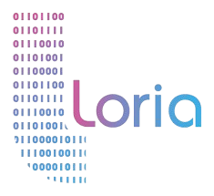
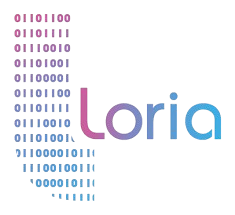

Clémence Bouvier
Home

About Me
Since December 2024, I am an Inria researcher in the CARAMBA team in Nancy.
Before that, I was a Ph.D student in the project-team
COSMIQ of Inria Paris,
under the supervision of
Anne Canteaut
and Léo Perrin,
with a grant from Sorbonne Université.
I also did a post-doc from December 2023 to October 2024 at the Ruhr Universität Bochum
in the Symmetric Cryptography group.
I am mainly working on symmetric cryptography, and more precisely on arithmetization-oriented primitives.
![[logoCNRS]](pictures/logoCNRS.png) 

Contact
Office: B250
Mail: clemence [dot] bouvier [at] inria [dot] fr
Address:
Centre Inria de l'Université de Lorraine
Bât. B, CARAMBA
615 rue du jardin botanique
F-54600 Villers-lès-Nancy
France